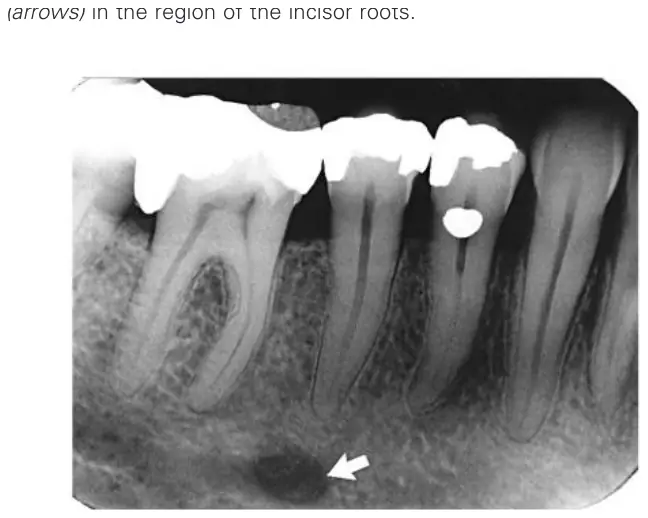
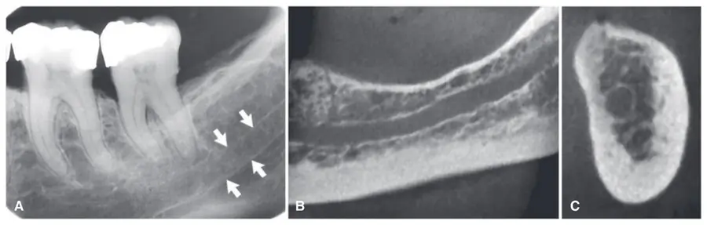

نسخه استخراجشده؛ ترجمه یا تأیید علمی انجام نشده است. وضعیت: captured
ناحیهی قدامی مندیبل شلوغترین بخش رادیوگرافی دندان است — و بیشتر ساکنانش بیآزارند.

سیمفیز. در نوزادان یک خط رادیولوسنت در خط وسط فک میان سانترالهای شیری در حال تشکیل دیده میشود. «این سوچور معمولاً تا پایان سال اول زندگی جوش میخورد و پس از آن دیگر رادیوگرافیک نمایان نیست.»
و حکم صریح: «اگر این رادیولوسنسی در افراد بزرگتر پیدا شود، غیرطبیعی است و ممکن است به شکستگی یا شکاف اشاره کند.»
توبرکلهای ژنیال (خار منتال): روی سطح لینگوال مندیبل، کمی بالاتر از حاشیهی تحتانی و در خط وسط. برجستگیهای استخوانیِ کموبیش خارمانند که اغلب به یک برجستگی راست و چپ و یک فوقانی و تحتانی تقسیم میشوند. «عضلات ژنیوگلوس را (به توبرکلهای فوقانی) و ژنیوهایوئید را (به توبرکلهای تحتانی) به مندیبل میچسبانند.»
روی اکلوزال مندیبل بهخوبی دیده میشوند. روی پریاپیکال ناحیهی انسیزور «ظاهرشان متغیر است؛ اغلب بهصورت یک تودهی رادیواوپک ۳ تا ۴ میلیمتری در خط وسط زیر ریشهی انسیزورها. ممکن است اصلاً دیده نشوند.»
سوراخ لینگوال. «سوراخهای لینگوال خط وسط در ۹۶ تا ۱۰۰ درصد افراد وجود دارند» و در ناحیهی توبرکلهای ژنیال قرار میگیرند. سوراخ فوقانی یک دستهی نوروواسکولار از شریانها و عصب لینگوال دارد، و سوراخ تحتانی از شریانهای سابلینگوال یا سابمنتال و عصب مایلوهایوئید تغذیه میشود. روی پریاپیکال معمولاً «یک کانال گرد رادیولوسنت با حاشیهی اوپک واضح در خط وسط، زیر تراز آپکس انسیزورها».
و چرا برای جراح مهم است: «شناخت محل آناتومیک در برنامهریزی پیش از جراحی ضروری است، چون آسیب به دستهی نوروواسکولار در جریان آمادهسازی بستر ایمپلنت میتواند به خونریزی شدید بینجامد.»
ریج منتال و حفرهی منتال — یکی روشن، یکی تیره:
سوراخ منتال — و عددی که باید بدانی: معمولاً «حد قدامی کانال دندانی تحتانی» است که روی پریاپیکال دیده میشود. تصویرش کاملاً متغیر است و «تنها حدود نیمی از مواقع روی پریاپیکال قابل شناسایی است».
و علتش صرفاً هندسی است: «چون دهانهی کانال منتال رو به بالا و عقب جهتگیری کرده. در نتیجه، نمای معمول پرمولرها از میان محور طولی دهانهی کانال پروجکت نمیشود.»
کجا و به چه شکل؟ «حدود نیمهی راه میان حاشیهی تحتانی مندیبل و کرست زائدهی آلوئولار، معمولاً در ناحیهی آپکس پرمولر دوم.» شکلش میتواند گرد، بیضی، شکافمانند یا بسیار نامنظم باشد و بهطور جزئی یا کامل کورتیکه. و چون روی سطح مندیبل است، «موقعیت تصویرش نسبت به ریشهی دندانها تحت تأثیر زاویهی پروجکشن است» — میتواند از مزیال ریشهی مولر اول دائمی تا مزیال ریشهی پرمولر اول هر جایی بیفتد.
وقتی سوراخ منتال روی آپکس پرمولر بیفتد، ضایعهی پریاپیکال را تقلید میکند. دو راه افتراق: «شواهد امتداد کانال آلوئولار تحتانی به آن رادیولوسنسی مشکوک»، یا «لامینا دورای قابل تشخیص در آن ناحیه». ولی صادقانه باید گفت که نازکی لامینا دورا در سوپرایمپوزیشن با سوراخ ممکن است «برناوت قابلملاحظهای» بسازد که تشخیصش را پیچیده کند — و آنگاه «رادیوگرافی دوم از زاویهی دیگر» هم لامینا دورا را روشن میکند و هم جابهجایی سوراخ نسبت به آپکس را نشان میدهد.
و دو واریاسیون که در ایمپلنت حیاتیاند: لوپ قدامی — کانال آلوئولار تحتانی پیش از سوراخ منتال به جلو میرود و سپس به عقب برمیگردد تا از سوراخ خارج شود، و سوراخ منتال فرعی با بروز حدود ۷ درصد. «وقتی دیدن سوراخ منتال برای طرح درمان حیاتی باشد، مثل قرار دادن ایمپلنت، CBCT روش انتخابی است.»
مندیبل خلفی پر از کانال، ریج و حفره است — تیره یا روشن، هیچکدام بیماری نیستند.

کانال آلوئولار تحتانی. «یک سایهی خطی تیره با حاشیههای نازک رادیواوپک فوقانی و تحتانی، ناشی از لاملای استخوانی که کانال را محدود میکند.» گاهی حاشیهها فقط تا حدی یا اصلاً دیده نمیشوند. پهنای کانال میان بیماران متغیر است ولی «معمولاً قدام ناحیهی مولر سوم ثابت است».
رابطهاش با ریشهها: از تماس نزدیک با همهی مولرها و پرمولر دوم، تا حالتی که «هیچ رابطهی نزدیکی با هیچیک از دندانهای خلفی ندارد». ولی «در تصویر معمول، کانال با آپکس مولر سوم در تماس است و فاصلهاش با سایر ریشهها هرچه به جلو میرود بیشتر میشود».
و اشتباه رایج آن: «وقتی آپکس مولرها روی کانال بیفتند، لامینا دورا ممکن است بیشنوردیده شود و تصور لامینای غایب یا فضای PDL ضخیمشده را القا کند.» راهحل دو نکته دارد: «برای اطمینان از سلامت چنین دندانی باید از سایر روشهای آزمون بالینی (مثل تست حیات) استفاده شود» — و مهمتر: «چون کانال معمولاً درست زیر آپکس دندانهای خلفی است، تغییر زاویهی عمودی برای رادیوگرافی دوم احتمالاً تصویر آپکس و کانال را از هم جدا نمیکند.»
و یک واریاسیون با عدد: کانال آلوئولار تحتانی دوشاخه (بایفید) با فراوانی گزارششدهی حدود ۱۵ درصد؛ روی پانورامیک و کنبیم دیده میشود. «بیماران با کانال دوشاخه در معرض خطر بیشتر بیحسی ناکافی یا عوارض جراحی — مثلاً از قرار دادن ایمپلنت — هستند.» در مقاطع عرضی و کرونال، کانال معمولاً یک رادیولوسنسی بیضی یا گرد با حاشیهی کورتیکه است، هرچند گاهی کورتیکاسیون نازک یا نامحسوس است.
کانالهای نوترینت. دستهی نوروواسکولار را حمل میکنند و «بهصورت خطوط رادیولوسنت با پهنای نسبتاً یکنواخت» دیده میشوند. اغلب روی پریاپیکال مندیبل، بهصورت عمودی از کانال دندانی تحتانی مستقیماً به آپکس یک دندان یا به فضای بیندندانی میان انسیزورهای مندیبل.
در چه کسانی بیشتر دیده میشوند؟ «در حدود ۵ تا ۴۰ درصد همهی بیماران قابل مشاهدهاند و در بیماران سیاهپوست، مرد، مسنتر، و بیماران با فشار خون بالا، دیابت شیرین یا بیماری پریودنتال پیشرفته شایعترند.» در ریج نازک هم برجستهتر میشوند.
و یک خطای هندسی: «گاهی یک کانال نوترینت عمود بر کورتکس جهتگیری میکند و بهصورت یک رادیولوسنسی گرد کوچک ظاهر میشود که رادیولوسنسی پاتولوژیک را تقلید میکند.» چون فضای آناتومیک با دیوارهی کورتیکال است، تصویرش گاهی حاشیهی هایپراستوتیک دارد.
ریج مایلوهایوئید (ریج مایل داخلی): «یک کرست استخوانی کمی نامنظم روی سطح لینگوال بدنهی مندیبل». حاشیهی قدامیاش حدود ۱۰ میلیمتر پایینتر از ریج آلوئولار در لینگوال پرمولر دوم است و به عقب تا ناحیهی مولر سوم، حدود ۵ میلیمتر زیر کرست آلوئولار، امتداد مییابد.
محل اتصال عضلهی مایلوهایوئید است. روی پریاپیکال «مورب به سمت پایین و جلو، از ناحیهی مولر سوم تا ناحیهی پرمولر، تقریباً در تراز آپکس دندانهای خلفی» میرود و گاهی روی ریشهی مولرها میافتد. حاشیههایش معمولاً نامشخص و منتشر است، ولی «هنگام زاویهی منفی بیش از حد» برجستهتر میشود.
حفرهی غدهی سابمندیبولار — رایجترین اشتباه در مندیبل خلفی: روی سطح لینگوال بدنه، «بلافاصله زیر ریج مایلوهایوئید در ناحیهی مولر» یک فرورفتگی در استخوان هست که غدهی سابمندیبولار را جا میدهد. «اغلب بهصورت یک ناحیهی رادیولوسنت با الگوی ترابکولار تنکِ مشخصهی همان ناحیه» دیده میشود.
مرزهایش را حفظ کن: «بهطور تیز در بالا با ریج مایلوهایوئید و در پایین با حاشیهی تحتانی مندیبل محدود است، ولی در قدام (ناحیهی پرمولر) و در خلف (حدود راموس صعودی) نامشخص است.» و حکم: «هرچند تصویر ممکن است بهشدت رادیولوسنت به نظر برسد — تشدیدشده توسط ریج مایلوهایوئید متراکم و حاشیهی تحتانی مندیبل — آگاهی از احتمال وجودش باید مانع از اشتباه گرفتنش با یک ضایعهی استخوانی توسط دندانپزشک کمتجربه شود.»
ریج مایل خارجی. «ادامهی حاشیهی قدامی راموس مندیبل» که مسیری قدامی-تحتانی جانبِ زائدهی آلوئولار طی میکند. در بخش بالایی نسبتاً برجسته است و «در ناحیهی مولر سوم بهطور محسوسی روی سطح بیرونی مندیبل بیرون میزند»، سپس صاف میشود و «معمولاً حدود جایی که زائدهی آلوئولار و مندیبل زیر مولر اول به هم میرسند ناپدید میشود». محل اتصال عضلهی بوکسیناتور است.
و رابطهی کلیدی با مایلوهایوئید: «بهطور مشخصه روی پریاپیکال خلفی بالاتر از ریج مایلوهایوئید پروجکت میشود و مسیری تقریباً موازی با آن دارد.» پس در یک تصویر، دو خط اوپک تقریباً موازی میبینی: بالایی خارجی (بوکال)، پایینی داخلی (لینگوال).
حاشیهی تحتانی مندیبل گاهی روی پروجکشن پریاپیکال بهصورت یک نوار استخوانی متراکم، پهن و رادیواوپک دیده میشود.